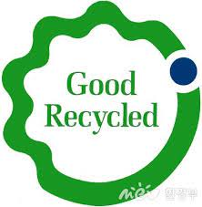
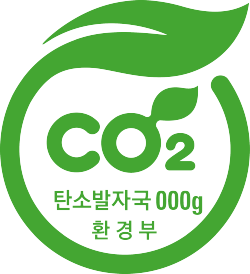
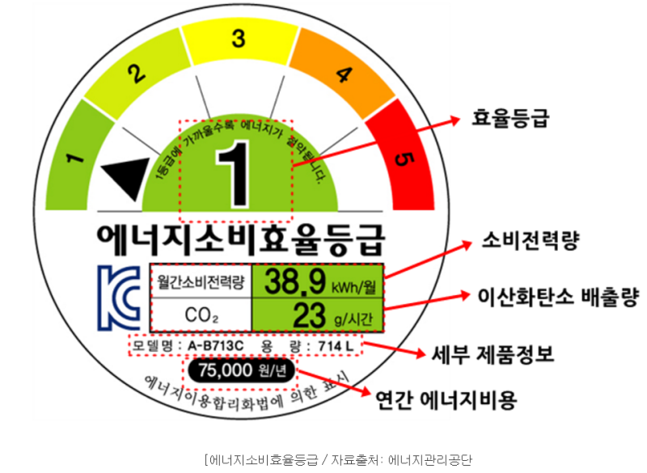
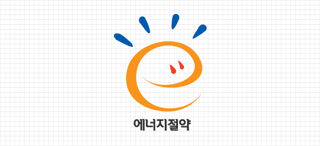
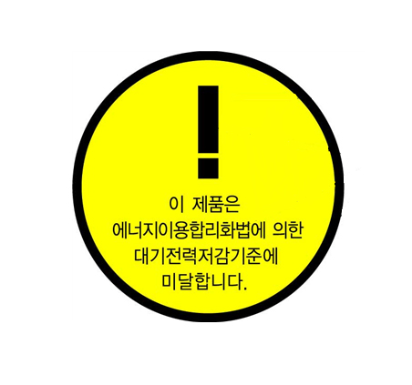
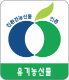
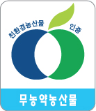
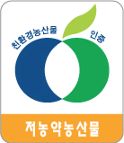

이메일 kyjstar0226@gmail.com
검색하러가기(글씨혹은 사진을 눌러주세요)
기후위기가 전 세계적인 쟁점이 되고, 환경문제가 심각해지면서 최근 주요 소비 추세 중 하나인 미닝아웃,
즉 소비행위를 통해 자신의 가치관과 신념을 적극적으로 표현하는 것을 말한다.
그리하여 미닝아웃으로 지속 가능한 소비, 녹색소비 역시 증가하고 있다.
하지만 사람들이 녹색 소비가 어떤 것인지, 어떻게 실천하는지 또한 어떤 효과를 내는지 잘 알지 못하는 경우가 많다.
따라서 SDGs라는 주제에 적합한 녹색 소비라는 주제를 바탕으로 공익적인 소프트웨어를 제작하고자 한다.
- 녹색 소비 마크(각 마크별 사진을 누르면 자세한 설명을 보실 수 있습니다)
- 환경마크
친환경적이며 품질이 우수한 제품에 대해 국가가 친환경상품임을 공인함
- 우수재활용제품마크

폐자원을 활용하여 제조된 제품 가운데 품질이 우수한 제품을 인증함
- 탄소성적표시

제품의 생산부터 폐기 과정까지 발생하는 온실가스의 배출량을 제품에 표기하고, 저탄소 배출 상품을 홍보하기 위해 시행한 제도
- 에너지소비효율등급

1992년부터 시작된 에너지소비효율등급표시제도는 에너지를 많이 소비하고 보급률이 높은 제품을 대상으로 1-5등급으로 에너지소비효율등급라벨을 부착토록 하고 최저소비효율기준 미달제품에 대해서는 생산, 판매를 금지하는 제도.
- 에너지절약마크

에너지절약마크는 에너지절약형 제품이나 사업장/단체등에 적용되며 에너지효율이 높고 대기전력 저감 성능이 우수한 제품이고 에너지 절약에 노력하는 사업장이라는 것을 의미함
- 대기전력경고표지

대기전력표지는 전자제품을 사용하지 않을 때 소모되는 대기전력을 저감시킨 대기전력을 저감시킨 대기전력저감우수제품의 보급을 확대하고 관련 기술의 개발을 촉진하기 위한 의무적인 신고 제도
- 유기농산물

3년이상 농약, 화학 비료를 사용하지 않고 재배한 농산물임을 인증하는 제도
- 무농약농산물

농약을 사용하지 않고 재배한 농산물임을 인증하는 제도
- 저농약농산물

농약을 1/2 이하로 사용하여 재배한 농산물임을 인증하는 제도